Each Grid instance is tied to a model, which contains the data represented by the Grid control. The grid model exposes properties that allow the user to manipulate grid rows and columns.
Setting Rows and Columns count
The grid model has RowCount and ColumnCount properties. These can be set to change the number of rows and columns in the grid control, as shown below:
|
[C#]
// Set Row count grid.Model.RowCount = 10;
// Set Column count grid.Model.ColumnCount = 20; |
Setting Row Heights and Column Widths
The grid model also stores information on row heights and column widths. Its ColumnWidths and RowHeights properties can be changed using indexers as shown below:
|
[C#]
// Setting column widths grid.Model.ColumnWidths[0] = 30; grid.Model.ColumnWidths[1] = 80; grid.Model.ColumnWidths[2] = 100; grid.Model.ColumnWidths[3] = 50; grid.Model.ColumnWidths[4] = 250;
// Setting row heights grid.Model.RowHeights[5] = 40; grid.Model.RowHeights[3] = 40; |
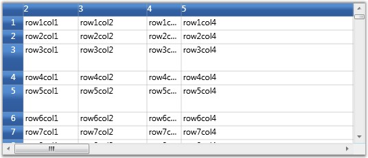
Figure 55: Setting Row heights and Column widths
You can also specify the DefaultLineSize setting on ColumnWidths and RowHeights in order to set the default width or height.
|
[C#]
grid.Model.RowHeights.DefaultLineSize = 20; grid.Model.ColumnWidths.DefaultLineSize = 100; |
Hiding Rows and Columns
Essential Grid supports efficient hiding of rows and columns. You can hide and unhide ranges of rows and columns using SetHidden method on ColumnWidths and RowHeights.
 Note: SetHidden method accepts the following three
parameters:
Note: SetHidden method accepts the following three
parameters:
· The first parameter is an integer, which specifies the starting row/column to hide/unhide
· The second parameter is an integer, which specifies the ending row/column to hide/unhide
· Third is a boolean parameter that determines whether to hide or unhide the specified number of rows or columns. The rows/columns will be hidden when this parameter is set to true.
The following code illustrates the usage of SetHidden method:
|
[C#]
// Hide rows grid.Model.RowHeights.SetHidden(2, 100, true); grid.Model.RowHeights.SetHidden(110, 1000, true); // Unhide rows grid.Model.RowHeights.SetHidden(1010, 10000, false);
//Hide columns grid.Model.ColumnWidths.SetHidden(2, 100, true); grid.Model.ColumnWidths.SetHidden(110, 150, true); // Unhide columns grid.Model.ColumnWidths.SetHidden(1010, 10000, false); |
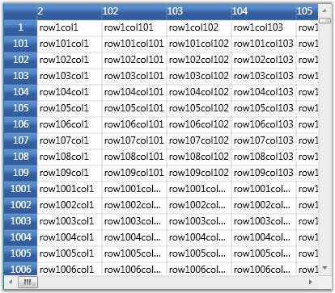
Figure 56: Hiding rows and columns
Freeze Rows and Columns
It is possible to fix any number of rows and columns so that they are still visible when a grid is scrolled. This feature is called as freezing. It can be achieved in the Grid by setting the FrozenRows and FrozenColumns properties of grid model, as shown below:
|
[C#]
// Freeze rows and columns grid.Model.FrozenRows = 4; grid.Model.FrozenColumns = 3; |
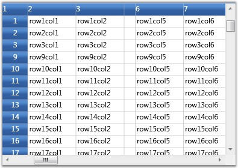
Figure 57: Frozen rows and columns
You can also fix rows to the right of the grid and columns to the bottom. Such fixed rows and columns are referred to as Footer rows and Footer columns. The properties FooterRows and FooterColumns determine the number of footer rows and footer columns. The footer row or column can be customized by using the FooterStyle property.
The following code illustrates the usage of FooterRows, FooterColumns and FooterStyle properties:
|
[C#]
// Footer rows and columns grid.Model.FooterRows = 3; grid.Model.FooterColumns = 1; grid.Model.FooterStyle.Background = Brushes.LightCoral; |
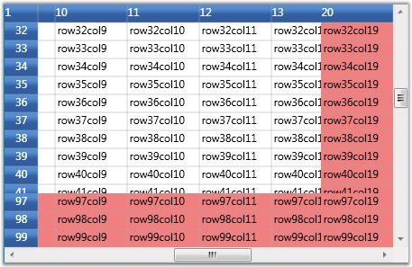
Figure 58: Footer rows and footer columns
Header Rows and Columns
Grid allows the user to have any number of header rows and columns. It is done by using the HeaderRows and HeaderColumns properties of the grid model. The HeaderStyle property of the grid model controls the appearance of these header rows and header columns.
The following code illustrates the usage of HeaderRows, HeaderColumns and HeaderStyle properties:
|
[C#]
// Header rows and columns grid.Model.HeaderRows = 3; grid.Model.HeaderColumns = 2; grid.Model.HeaderStyle.Font.FontStyle = FontStyles.Italic; |
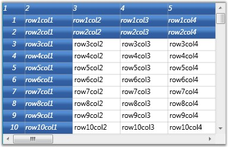
Figure 59: Header rows and header columns
Resize Rows and Columns
Grid allows the user to resize the rows and columns at run time. When this feature is enabled and if you move the mouse over the row or column divider, it will show a resize cursor using which you can resize the row or column to the required level. The following images illustrate the resizing of a column and a row:
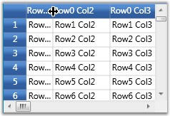
Figure 60: Column Resizing
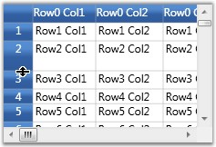
Figure 61: Row Resizing
This feature is turned on by default. To disable column or row resizing, you need to detach the corresponding mouse controllers from grid, as shown below:
|
[C#]
IMouseController controller = grid.MouseControllerDispatcher.Find ("ResizeRowsMouseController"); grid.MouseControllerDispatcher.Remove(controller);
controller = grid.MouseControllerDispatcher.Find ("ResizeColumnsMouseController"); grid.MouseControllerDispatcher.Remove(controller); |
Note: To prevent resizing of specific row or
column, it is required to handle ResizingRows and ResizingColumns
events.
Inserting Rows and Columns
New columns and rows can be inserted at run time by using the following APIs:
· InsertColumns()
· InsertRows()
Both these methods accept the following two parameters:
1. position index
2. number of rows or columns to insert
The following code illustrates the usage of InsertColumns and InsertRows methods:
|
[C#]
//Insert a column at position 2. grid.Model.InsertColumns(2, 1);
//Insert 2 rows at position 5. grid.Model.InsertRows(5, 2); |
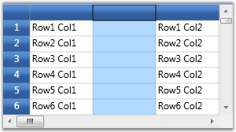
Figure 62: Inserted new Column at index 2
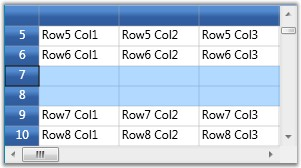
Figure 63: Inserted new Row at index 7
Note: You can track the moment the rows or columns
are inserted by handling the RowsInserted and ColumnsInserted events.
Moving Rows and Columns
The rows and columns can be rearranged dynamically by moving them from one position to another using the following APIs:
· MoveRows()
· MoveColumns()
These methods accept the following three parameters:
· Position from which the rows or columns should be removed
· Number of rows or columns
· The new position at which these rows or columns should be inserted
You can also achieve this by a simple drag-and-drop action on the desired rows and columns.
The following code illustrates the usage of MoveColumns and MoveRows methods:
|
[C#]
//Move 3 rows from index 2 to index 5. grid.Model.MoveRows(2, 3, 5);
//Move 2 columns from index 1 to index 4. grid.Model.MoveColumns(1, 2, 4); |
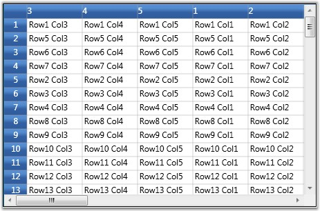
Figure 64: Moving rows and columns
Note: You can track the moment the rows or columns
are moved by handling the RowsMoved and ColumnsMoved event.
Removing Rows and Columns
It is possible to remove a range of rows and columns from the grid. The APIs RemoveRows() and RemoveColumns() are used to achieve this. They accept two parameters–
1. An index, from which the rows or columns should be removed
2. Total number of rows or columns to be removed
The following code illustrates the usage of RemoveColumns and RemoveRows methods:
|
[C#]
//Remove 4 rows from position 3. grid.Model.RemoveRows(3, 4);
//Remove 3 columns from position 2. grid.Model.RemoveColumns(2, 3); |
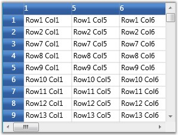
Figure 65: Removing columns 2, 3 and 4
You can track the moment the rows or columns are inserted by handling the RowsRemoved and ColumnsRemoved events.
AutoFit content
The rows heights and column widths can be made to adjust themselves automatically to fit the content by using the methods ResizeRowsToFit() and ResizeColumnsToFit(), which accept the following two parameters –
1. A range of rows or columns whose size should be adjusted
2. A GridResizeToFitOptions enumeration value.
The GridResizeToFitOptions enum value specifies how the resizing action should be performed; whether to include covered cells, hidden cells, headers, and whether or not to shrink size, and the like.
The following code illustrates the usage of ResizeRowsToFit and ResizeColumnsToFit methods:
|
[C#]
//Auto fit column 3 grid.Model.ResizeColumnsToFit(GridRangeInfo.Col(3), GridResizeToFitOptions.NoShrinkSize);
//Auto fit row 2 grid.Model.ResizeRowsToFit(GridRangeInfo.Row(2), GridResizeToFitOptions.NoShrinkSize); |
Figure 66: Auto fit Column 3
Figure 67: Auto fit Row 2